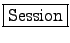
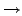

![\includegraphics[width=10cm]{images/snapshot11.eps}](img1.png)
|
Stefano Pintore, Matteo Quintiliani
Istituto Nazionale di Geofisica e Vulcanologia, Roma, Italy
This document contains user manual of Teseo2. Teseo2 is an open source software capable of vectorise seismic traces. Source code is available on CVS server of the Istituto Nazionale di Geofisica e Vulcanologia.
Teseo2 is available for several platforms, such as Linux, Windows and MAC OS X. You can find source and binary distributions at the Sismos project web site, http://sismos.ingv.it/teseo/
Follow instructions in INSTALL file from the distribution of your choice.
To start Teseo2, start GIMP, open your xcf seismogram image and select Teseo-2 from Teseo menu (figure 1). Alternatively, you can use the context menu on the image (right-clicking) or define a shortcut, see GIMP help.
Teseo2 associates to the working image some information related to seismogram paper, seismic event, station data and vectorisation parameters. All these information are saved in a  and have to be referred to a single seismic event.
First time Teseo2 starts on a image, it requires to create a new session filling the fields shown in the figures 2, 3, 4, and pressing on the OK button.
Session properties can be modified at any time selecting File Session Properties (Ctrl+R in Teseo2 context). New sessions related to other events in the same image can be created selecting File Session New (Ctrl+N). Teseo2 use a fixed session naming convention, so the user can't change session file name.
Starting Teseo2 on a image associated to more sessions, user can choose the preferred one.
Trace vectorisation with Teseo2 relies on GIMP Paths Tool, see GIMP help for basic usage. Paths Tool permits to create piecewise cubic Bézier curves and polygonals.
WARNING: Teseo2 does not support closed paths use and paths that have two or more components.
WARNING: Seismogram must be oriented from left to right and top to bottom. Use gimp to flip or rotate the image if necessary ;-)
User can manually vectorise the traces using GIMP Paths Tool, creating several piecewise cubic Bézier curves or polylines. Moreover, it is possible use the Teseo2 automatic path vectorisation tool. Up to now, this tool offers one algorithm based on a weighted mean of the colour trace [1].
What effectively takes place is an iterative procedure, whereby at each single iteration step the next point is found by submitting to an algorithm a rectangular portion of the image centred at the current point and the information regarding the closest previous points.
In figure 5 are shown main parameters of the Teseo2 automatic path vectorisation tool:
The colour weighted mean algorithm takes rectangle dimension in pixels from the tab shown in figure 6.
Besides GIMP path manipulation, Teseo2 adds some useful operations in seismogram vectorisation. In figure 7 is shown the Teseo2 Path menu.
WARNING: order in operations on multiple paths respects order of the GIMP Path Tool, that is from bottom to top.
For example, executing a link on paths shown in figure 8 results a new path concatenating paths a, b and c, respectively.
Teseo2 import and export several file formats as shown in figures 9 and 10:
Up to now, SVG export is possible only by GIMP Path Tool, DXF import is possible only on Teseo2 exported paths, SAC import is not implemented yet.
This document was generated using the LaTeX2HTML translator Version 2002-2-1 (1.71)
Copyright © 1993, 1994, 1995, 1996,
Nikos Drakos,
Computer Based Learning Unit, University of Leeds.
Copyright © 1997, 1998, 1999,
Ross Moore,
Mathematics Department, Macquarie University, Sydney.
The command line arguments were:
latex2html -show_section_numbers -no_navigation -split 0 -address 'Matteo Quintiliani, Stefano Pintore - teseo@ingv.it' teseo2_user_manual
The translation was initiated by Matteo Quintiliani on 2005-09-09
![\includegraphics[width=10cm]{images/snapshot8.eps}](img6.png)
![\includegraphics[width=7cm]{images/snapshot1.eps}](img7.png)
![\includegraphics[width=7cm]{images/snapshot4.eps}](img9.png)
![\includegraphics[width=7cm]{images/snapshot12.eps}](img10.png)
![\includegraphics[width=7cm]{images/snapshot9.eps}](img11.png)